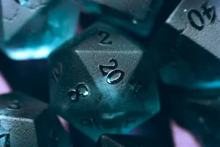
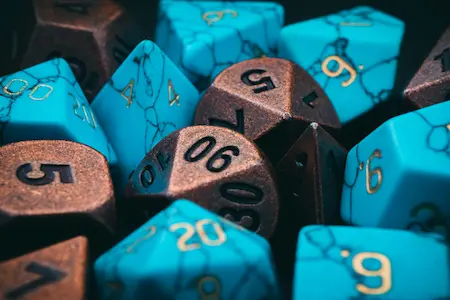
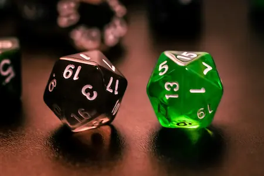

Próximo proyecto
En Mago de papel estamos pensando continuamente cual va a ser nuestro siguiente reto. ¿Cual va a ser nuestro próximo proyecto?

Dados artesanales para aventurero/as, hechicero/as y amantes de los juegos de rol. Cada pieza está creada con cuidado para acompañarte en tus mejores campañas... y en tus peores tiradas.
Mago de Papel nació de nuestra pasión por los juegos de rol y la creación artesanal. Todo empezó con el clásico Dungeons and dragons (D&D). Como jugadores, sabemos que cada dado cuenta una historia y que una buena tirada puede convertirse en un recuerdo inolvidable (también sabemos que una mala tirada también suele ser inolvidable...). Nuestro objetivo es diseñar dados únicos que reflejen la personalidad de cada aventurero/a. Desde colores mágicos hasta acabados especiales, buscamos que cada conjunto tenga su propia identidad. Porque cuando tu personaje se enfrenta a dragones, demonios o decisiones terribles, merece hacerlo con estilo.
Cada conjunto de dados comienza con un proceso de diseño y experimentación. Seleccionamos cuidadosamente colores, efectos y materiales para conseguir resultados únicos. Los dados se crean mediante moldes de precisión y resinas de gran calidad, pasando por distintas fases de curado, pulido y acabado. Este proceso requiere tiempo y atención al detalle para garantizar piezas atractivas y funcionales. El resultado son dados artesanales que combinan creatividad, calidad y personalidad.
En Mago de Papel trabajamos en diferentes colecciones inspiradas en mundos de fantasía, magia y aventura. No ponemos límites a nuestra imaginación, así que, ¿Por qué ibamos a ponerle límites a nuestros aventureros/as?
Descubre algunos de nuestros diseños y procesos de creación. Cada conjunto es diferente y refleja horas de trabajo artesanal.


En Mago de papel estamos pensando continuamente cual va a ser nuestro siguiente reto. ¿Cual va a ser nuestro próximo proyecto?

Puedes contactar con nosotros/as para explicarnos qué ideas tienes para tu siguiente kit de dados. No olvides explicarnos cual es tu inspiración. Te mandaremos un bozeto de un dado d20 para que nos des tu visto bueno y así podamos crearlos solo para ti. Vas a ser el/la jugador/a más ovacionado de la party.